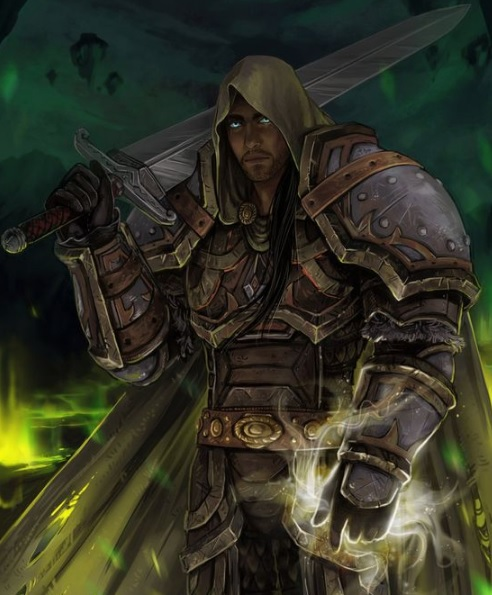

Dini inançları güçlü, hem savaşçı hem büyücü bir sınıftır.
Güçlerini Tanrı’nın yolunda kullanan iyi yönelimli savaşçılardır.
Kemboların azılı düşmanlarıdır.
Hayatlarını iyileri savunmaya, kanunları korumaya, kötüleri yer yüzünden silmeye adamışlardır.
Seviye 1
Hançer: Hançer kullanabilme yeteneğidir.Topuz: Topuz kullanabilme yeteneğidir.
Teber: Teber kullanabilme yeteneğidir.
Kalkan bloğu: Kurbanın saldırısını kalkanla karşılamak için geliştirilen yetenek. (otomatik)
Kılıç: Kılıç kullanabilme yeteneğidir.
Anımsa: Ait olduğunun dinin tapınağına dönüş komutudur. Seviye 10a kadar geçerlidir. (anımsa)
Kurtar: Dövüş sırasında eğer darbelere maruz kalıyorsanız başka bir karakter sizi kurtararak göğsünü siper edebilir. Bu noktada size vuran mobil ya da karakter sizi kurtarana vurmaya başlar.(kurtar
Seviye 3
Karşılama: Kurbanın saldırısını silahla karşılamak için kullanılan yetenek. (otomatik)Seviye 6
Omuz: Hasar vermeyi ve düşürmeyi hedefleyen yetenek. Çok etkilidir.Muhakkak pratik edilmesi gerekir. Omuz yiyen karakter 2 tur boyunca yerden kalkamaz ve büyü yapamaz. Omuz atan karakter 2 tur boyunca otomatik dövüşmekten başka birşey yapamaz. Omuz atmaya çalışan kişi yere düşebilir. Uçanlara, çeviklere omuz atmak zordur. Yapılı ve ağır birine omuz atmak bir binaya omuz atmaya benzeyebilir. (omuzKapıkırma: Belirtilen yöndeki kapıyı (veya belirtilen isimdeki kapıyı)omuz atarak kırmayı hedefleyen yetenek. (kapıkır
Yüksek zarar: Kurbana verilen zararı artırmayı sağlayan yetenek. (otomatik)
Seviye 7
Hızlı iyileşme: Yaşam puanının daha hızlı yenilenmesini sağlayan yetenek. Bu yetenek yürürken de, dinlenirken de, uyurken de çalışır.(otomatik)Seviye 11
Çıplak el: Silahsızken de etkili dövüşebilmeyi sağlayan yetenek. (otomatik)Seviye 12
Pazarlık: Alışverişlerde alırken ucuza alma, satarken pahalıya satma yeteneğidir. Bu yetenek kullanılarak dükkan sahibi fiyat konusunda ikna edilmeye çalışılır. Hırsızlar pazarlık konusunda doğuştan yeteneklidirler. (otomatik)Seviye 13
İkili hamle: Dövüşlerde bir turda iki hamle yapabilmek için gerekli yetenek. (otomatik)Seviye 14
Meditasyon: Hızlı iyileşmeye benzer. Yöntem olarak uyurken veya dinlenirken zihin yoğunlaşması kullanılır ve büyü gücünün (mana) yenilenmesi sağlanır. (otomatik)Seviye 19
İrfan: Bilgelik vasıtasıyla herhangi bir eşyanın niteliklerini öğrenme yeteneğidir. Tanımlama büyüsüne benzer. (irfanSeviye 20
Silahsızlandır: Rakibin silahını saldırı esnasında yere düşürme yeteneğidir. (silahsızlandır)Seviye 21
Sıyrılma: Saldırının vuracağı noktadan ayrılma prensibine dayanan tekniktir.Hem saldıran hem de sıyrılmayı deneyen için çeviklik değeri çok önemlidir.Savaşçılar sıyrılma yeteneğinin ustalarıdırlar.(otomatik)Seviye 27
Üçlü hamle: Dövüşlerde bir turda üç hamle yapabilme yeteneği. (otomatik)Seviye 29
Kalkan yarma: Dövüş sırasında rakibin kalkanını yarmak için kullanılır. (kalkan yarma)Seviye 32
Kör dövüşü: Karakterin gözleri görmüyorken de dövüşebilmesini sağlayan yetenek. (otomatik)Seviye 34
Silah yarma: Dövüş sırasında rakibin silahını yarma yeteneği. (silah yarma)Seviye 35
Kontra: Yapılan saldırıya kontra bir saldırıyla cevap vermek için geliştirilen yetenek. (otomatik)Seviye 48
İkinci silah: İki silahı aynı anda (verimli şekilde) kullanabilmek için geliştirilen yetenek.(otomatik)Kırbaçla: Silah olarak bir kırbaç kullanırken, kırbacı savurarak düşmanın kaçmasını engelleyecek şekilde zarar verme yeteneği.
Seviye 56
Çapraz blok: Kurbanın saldırısını çapraz blokla karşılayabilmek için gerekli yetenek. (otomatik)Seviye 61
İkincil hamle: Bir silahla iki vuruş yapabilmeyi sağlayan yetenek. (otomatik)Seviye 63
Şifalıeller: Birine dokunarak iyileştirmeyi sağlayan yetenek. (şifa)Seviye 1
Yönelim saptama: Hedefin yönelimini saptamaya yarar.(büyü yönelim hedef_adı)Seviye 3
Mantar: Yenilebilir bir mantar yaratan büyü.(büyü mantar)Kem saptama: Kötü ruhları saptayabilmek için büyücünün kendi gözlerine yaptığı büyüdür.(büyü kem)
İyi saptama: Büyücünün iyi ruhları saptamak için kendi gözlerine yaptığı büyü.(büyü iyi)Seviye 4
Su yaratma: İçecek taşıyıcılarının ( örn. matara ) içini su ile dolduran büyü. (büyü 'su yaratma' su_taşıyıcısının_adı)Seviye 5
Hafif tedavi: İyileştirme büyüsü.(büyü 'hafif tedavi' hedef_adı)Seviye 7
Körlük tedavi: Hedefin gözlerindeki körlüğü yoketmeyi amaçlayan büyü. (büyü 'körlük tedavi' hedef_adı)Seviye 10
Ciddi tedavi: İyileştirme büyüsü.(büyü 'ciddi tedavi')Seviye 11
Kemden korunma: Kişiyi kem yönelimlilere karşı korur.(büyü kemden)Seviye 12
Zırh: Hedef kişiyi korumayı, aldığı darbelerin etkisini azaltmayı amaçlar.(büyü zırh hedef_adı)Seviye 13
Lanet kaldır: Bir eşyanın ya da kişinin üzerindeki laneti kaldırmak için kullanılır.(büyü 'lanet kaldır' hedef_adı)Seviye 14
Kutsama: büyüye karşı korumayı ve vuruş zarını arttıran bir koruma büyüsü. (büyü kutsama hedef_adı)Seviye 18
Kritik tedavi: İyileştirme büyüsü.(büyü 'kritik tedavi')Seviye 19
Nesne bulma: Bir eşyanın diyarın neresinde bulunduğunu bulmaya yarar. (büyü nesne nesne_adı)Seviye 20
Gül: Bir adet gül yaratmayı sağlayan büyü.(büyü gül)Ateş geçirmez: Eşyayı ateşe karşı dayanıklı hale getiren büyü.(büyü 'ateş geçirmez' eşya_adı)
Seviye 23
Görünmezi saptama: Büyücünün görünmezleri saptamak için kendi gözlerine yaptığı büyüdür.(büyü 'görünmezi saptama')Seviye 27
Takdis: Hedefi gelecek darbelerden korumayı amaçlayan büyü. Diyarın bilinen en kuvvetli koruma büyülerindendir.(büyü takdis hedef_adı)Seviye 29
Şifa: Kişiyi iyileştirmeyi sağlar.(büyü şifa hedef_adı)Seviye 32
Alev saldırısı: Alev saldırılarıyla kurbana zarar vermeyi sağlayan büyü.(büyü alev düşman_adı)Anımsama sözcüğü: Kendi dininin tapınağına dönmeyi sağlayan büyü.(büyü anımsama)
Seviye 33
Hastalık tedavi: Hedefteki hastalıkları yoketmeyi amaçlayan büyü.(büyü 'hastalık tedavi' hedef_adı)Zehir tedavi: Hedefteki zehri yoketmeyi amaçlayan büyü. Zehir tedavi.(büyü “zehir tedavi” hedef_adı)
Seviye 34
Gazap: Kurbanı ağır bir lanetin pençesine sürükler.(büyü gazap düşman_adı)Seviye 35
Kem defet: Kem varlıklara zarar veren büyü.(büyü 'kem defet' düşman_adı)Seviye 38
Kutsal söz: Odada bulunanlardan büyüyü yapanla aynı yönelime sahip olanları olumlu, ters yönelime sahip olanlarda olumsuz etki yapan bir büyüdür. (büyü 'kutsal söz')Seviye 41
Şimşek çağrısı: Ancak açık havada ve kötü havada yapılabilen bu büyü, yakında bulunanlara vuran bir şimşek yaratır.(büyü 'şimşek çağrısı')Korku kaldır: Kurban üzerindeki korkuyu kaldırmak için kullanılır.(büyü 'korku kaldır' hedef_adı)
Seviye 43
Yüksek şifa: İleri derecede iyileştirici bir büyüdür. Uygulanan kişinin vücudunda sıcak bir his oluşmasını sağlar.(büyü yüksek hedef_adı)Seviye 45
İlahi enerji: Yönelimi iyi olmayan kurbana zarar veren ve onu kör eden büyüdür.(büyü ilahi düşman_adı)Seviye 51
Çağrı: Uzaktaki bir oyuncuyu ya da mobu büyüyü yapanın yanına transfer etmeyi sağlar.(büyü çağrı çağrılanın_adı)Seviye 53
Kutsal topraklar: Odadaki laneti, zehiri, uyuşukluk sisini, uyku gazını ve vebayı kaldırmak için kullanılır.(büyü 'kutsal topraklar')Seviye 55
Silah kutsama: Silahı kutsamayı sağlar. Bu durum silahın verimini artırır. (büyü 'silah kutsama' silah_adı)Seviye 56
Esneklik: Enerji emen saldırılara karşı koruma sağlar.(büyü esneklik)Seviye 59
Kutsal hiddet: Kişiyi kutsal bir öfkeyle doldurarak dövüşe hazırlar. Bu öfke zarar zarını ve vuruş zarını artırır.(büyü 'kutsal hiddet')Seviye 60
Devir: Kurbana parlak bir ışık ışınıyla saldırmayı sağlayan büyü.(büyü devir düşman_adı)Seviye 62
Kutsal ayla: Kişinin çevresinde kutsal bir aura oluşturur. Bu aura hem zarardan hem de negatiften korur.(büyü 'kutsal ayla')Seviye 63
Yatıştırma: Sürmekte olan bir dövüşü bitirmek için kullanılır.(büyü yatıştırma)Seviye 64
Işık oku: Kurbana zarar veren ışıktan bir ok yaratıp fırlatır.(büyü ışık düşman_adı)Seviye 70
Yüksek tedavi: İleri derecede tedavi için kullanılır.(büyü 'yüksek tedavi' hedef_adı)Seviye 75
Grup şifa: Gruptakilere iyileştirici bir sıcaklık veren büyü.(büyü 'grup şifa')